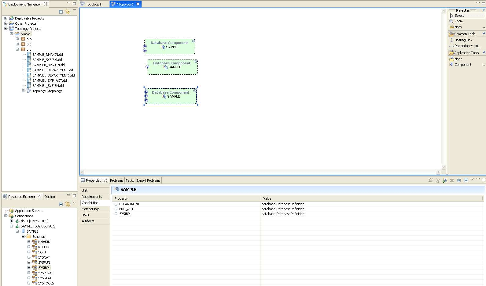
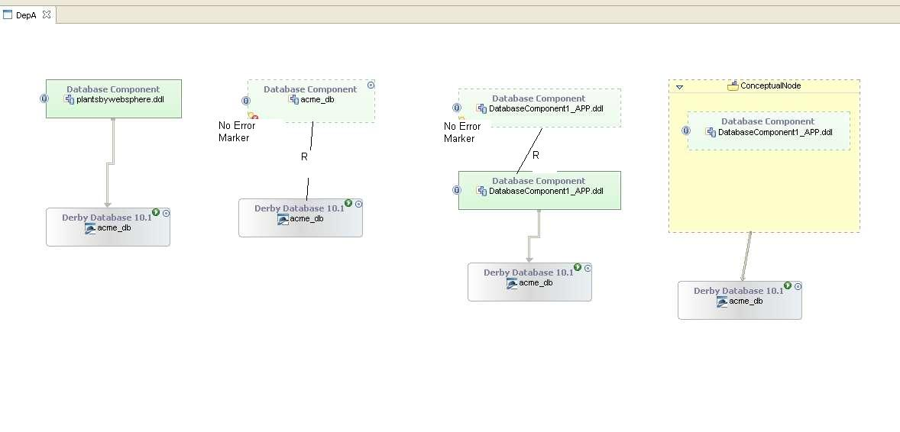

This design captures the database component creation with services from pallete
or from the existing schema or a table.
SOA Deploy Database Component Support
|
This design captures the database component creation with services from
pallete or from the existing schema or a table.
The scenaio's addressed as part of this item are as follows:
Scenario 1
Drag and drop a database schema definition from the Resource Explorer
on to the
conceptual data node in the business application topology.

- A data component is created.
- A Service is created on the component and set service interface
type as 'ddlInterface' . The ddlInterface definition is derived from
the database schema definition.
- A file artifact URI is added for the ddl definition.
- A host link is created between the database component and the data
node.
- The component is marked conceptual
Scenario 2
Drag a database component from pallette onto application topology canvas.
- A data component is created.
- Add a service on to the database component and set the interface definition
as DDL.
- Provide the interface definition either through a text editor or RDA
tools editor
- Host the database component on a conceptual node.
Scenario3
Drag a ddl file from pallette onto application topology canvas.
- A data component is created with conceptual as false.
- A Service is created on the component and set service interface type
as 'ddlInterface' . The ddlInterface definition is set as the DDL being
dropped.
- A file artifact URI is added for the ddl file thatis dropped.
- Provide the interface definition either through a text editor or RDA
tools editor
- Host the database component on a conceptual node or a database.
The following requirements of scenario's are addressed by the means
of this design:
- DDL Interface Support.
- Conceptual Database Unit Provider
- Database Schema Unit Provider
- Database Component Template
Note that the database connection drop onto the topology will
create a Conceptual Database Unit in a Business Application Topology Decorator
Semantic.
Bugzilla item for this review: 11519
|
| |
DDL Interface
In order to support a DDL interface definition a new type is needed.
The possible choices for this are :
- Database plug-in (Choosen)
- If we put this here then we will be making database domain dependent
on business, and that may not be a good idea if we want to have a infrastructure
tooling. As per our converations, we are ok with having a business domain
dependency for the infrastructure tooling extensions like DP.
- Business plug-in (There is no such plug-in now and contents are burried
with core)
- This will most likely be the place of choice for now to keep number
of plug-ins down. If we decide for all such business components to be
part of their specialized plug-in, then database will have it;s home in
business.database. The code will be categorized into it;s own database
package.
- Business.database plug-in.
- This will be the ideal case, but will explode the number of plug-ins
and hence the performance.
The DDLInterface definition can be one of following:
- Define the ddlInterface content to simply refer to a DDL definition URI.
We will point to the URI for the DDL.(Choosen).
The DDL at this level needs to be abtract, just define the basic schema
that is important for components and not yet tied to the technology.
<!-- DDL Interface Defintion
-->
<element name="interface.ddl" substitutionGroup="business:interface"
type="database:DDLInterface"/>
<complexType name="DDLInterface">
<complexContent>
<extension base="business:Interface">
<attribute name="schemaUri" type="anyURI" use="required"
/>
</extension>
</complexContent>
</complexType> |
Ruled Out:Define the table definition
as the allowable types on this interface. This can be complex, but powerful.
<business:ddlInterface>
<business:table displayName="" name=""/> ......provide
table definition etc in an abstract form.
<business:table displayName="" name=""/>
<business:table displayName="" name=""/>
</business:ddlInterface> |
Note that the DDL definition will just have the create table defintions
in M3, that will be extracted using the RDA tools.
Database Definition Service
A service needs to be specialized for database component that will provide
for the DDL Interface.
<!-- Database Definition Service -->
<element name="service.databaseDefinition" substitutionGroup="business:service"
type="database:DatabaseDefinition" />
<complexType name="DatabaseDefinition">
<complexContent>
<extension base="business:Service"/>
</complexContent>
</complexType> |
Database Component
We also need a database component definition. This again can be added
in 3 of the above places and for the same above reasons we will define this
in the database plug-in.
<!-- Database Component Defintion -->
<element name="component.database" substitutionGroup="business:component"
type="database:DatabaseComponent"/>
<complexType name="DatabaseComponent">
<complexContent>
<extension base="business:SoftwareComponent"/>
</complexContent>
</complexType> |
A databaseComponent template needs to be added. This template can be defined
in any of the following plug-ins:
- Database plug-in (Choosen)
- If we put this here then we will be making database domain dependent
on business, and that may not be a good idea if we want to have a infrastructure
tooling. As per our converations, we are ok with having a business domain
dependency for the infrstructure tooling extensions like DP.
- Business plug-in
- If we are keeping all the module templates here, then we will keep
this one too.
- Business.database plug-in.
- This will be the ideal case, but will explode the number of plug-ins
and hence the performance.
-
|
<?xml version="1.0" encoding="ASCII"?>
<core:topology
xmlns:xsi="http://www.w3.org/2001/XMLSchema-instance"
xmlns:database="http://www.ibm.com/ccl/soa/deploy/database/1.0.0/"
xmlns:core="http://www.ibm.com/ccl/soa/deploy/core/1.0.0/"
name="Database Component Template">
<database:component.database name="DatabaseComponent"
displayName="Database Component" initInstallState="not_installed"
publishIntent="publish" conceptual="false">
</database:component.database>
</core:topology>
|
Database Definition Provider
Provider to support the drag and drop of the database definition onto the conceptual
node to create a database component that provides a service with a DDL interface
for the database definition. Additional code needs to be executed post provider
that will create the host link between the data component and the conceptual
node.
On drop from the resource explorer,we will create the component as conceptual=false.
This will signify that the implementation is already associated with the component.
We can also capture, the additional connection information as an annotation
on the component, but it will then make it a 'connection specific' topology.
We will need to be smart to ignore such information or re-point to correct connection
meta-data. If we use the drop from the pallette, then conceptual=true. The component
will require to be implemented as a database module or point to the Database
creation scripts, if needs deployment.
Rules:
- If we drag a connection on the canvas, we create a conceptual node in BatDS
(Business Application Topology Decorator Semantic)
- If we drag a database schema definition, then we create a database component
with a datadefinition service with a DDLInterface providing all Tables definition.
- If we drag a Table definition, we create a database component with a datadefinition
service with a DDLInterface providing Table definition.
- If we have a conceptual node of the diagram and drop a database definition
on this node, then we create a database component and create a hosting link
between the two. Optional for M3 -
Available in M3
- Drag and drop of table onto a Dbcomponent - Optional
for M3 - Available in M3.
- Adds new data definition service with the interface that contains just
the table definition.
- Drag and drop of a ddl file on the canvas in Bat Ds will create a Database
Component, adds a new data definition service with a ddl interface definition.
Optional for M3 -
Available in M3
- Drag and drop of schema onto a DbComponent
- If the data definition service exits, adds a new data definition service
with a ddl interface definition.
- If the data definition service does not exits, adds a new data definition
service with a ddl interface definition. Optional
for M3 - Available in M3
- Schema Drag and Drop

- Table Drag and Drop
- 
Extraction of DDL from the Database Definition
We tie into the RDA tools, such as to extract the DDL definition from the database
definition. This is used to define the DDL interface definition. The DDL interface
definition is stored in the namespace folder
of the topology.
Editing of the DDL Interface
The DDL interface that is associated with the datadefinition service can be
opened from the properties tab. User is presented with the list of available
DDL resource to either pick a new definition or open an existing one.
All the above changes require RDA tools and are IDE specific tooling, that
needs to be specified in the ide extension plug-in. We cannot do this in database
plug-in, as this is a core functionality that will be shared by extension toolings
like from Tivoli's Deployment Planner.


Database Unit Provider for Business Application Topoloy Decorator Semantic
(BATDS)
When a database connection is dropped on a topology that has a BATDS, a conceptual
node is created instead of a database unit.
| Database Component Realization
|
The following four cases need to be supported.

| Testing Requrements [Top]
|
|
The database definition provider will be verified by junits that test
the follow:
- Load and verify all template additions
- Verify the database component creation/update from the resource explorer
- Verify the database component creation from the pallette
|
|
This documentation is maintained by Narinder Makin (nmakin@us.ibm.com).
Copyright (c) 2006 IBM Corporation. All rights reserved.
|